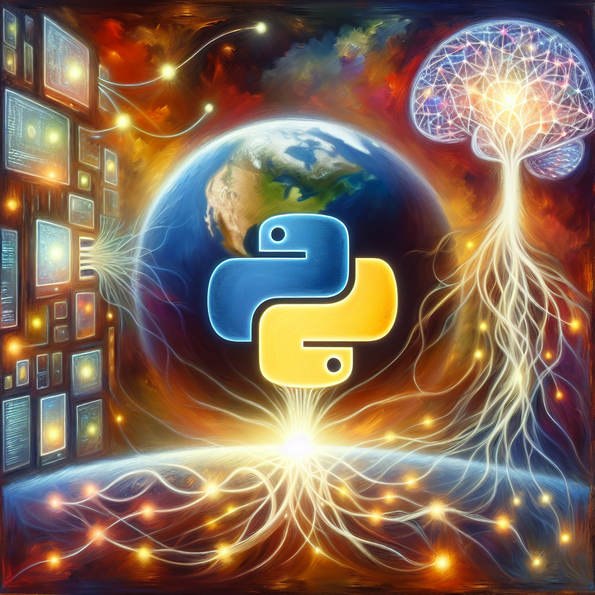

The future of Python and AI
Python has quickly become one of the most widely used programming languages in the world, and its popularity continues to grow. Its versatility and ease of use have made it a favorite among developers and tech enthusiasts. But as we move towards a more AI-driven world, what does the future hold for Python in the realm of artificial intelligence?
One of the main reasons for Python's success in the AI and machine learning space is its simplicity. The language has a clean and intuitive syntax that makes it easy for beginners to learn and understand. This has led to a large community of developers who are constantly pushing the boundaries of what can be achieved with Python and AI.
Python's popularity in the data science community is also a major factor in its success with AI. With its powerful libraries such as NumPy, Pandas, and Scikit-learn, Python is well-equipped for handling large datasets and performing complex data analysis. This makes it an ideal language for developing AI applications that require data processing and analysis.
In recent years, we have seen a surge in the development of AI frameworks and tools that are built on top of Python. These frameworks, such as TensorFlow, Keras, and PyTorch, have made it easier for developers to build and deploy AI applications using Python. They provide a high-level interface that abstracts away the complexities of machine learning algorithms, making it more accessible to a wider audience.
As the use of AI continues to expand into various industries and sectors, the demand for skilled developers in this field is also on the rise. Python's growing popularity in the AI space has led to a significant increase in job opportunities for Python developers with AI expertise. This trend is expected to continue in the future, making Python a valuable skill for anyone looking to pursue a career in AI.
Moreover, the future of AI is not just limited to traditional machine learning techniques. Python is also well-suited for emerging technologies such as deep learning, natural language processing, and computer vision. These fields are rapidly evolving and have the potential to transform the way we interact with technology. Python's versatility and wide range of libraries make it an ideal language for experimenting and developing these cutting-edge AI technologies.
In conclusion, the future of Python in the realm of AI looks bright. Its simplicity, powerful libraries, and growing community make it a strong contender in the race towards developing advanced AI applications. As we continue to push the boundaries of what is possible with AI, Python will undoubtedly play a crucial role in shaping the future of this exciting field.